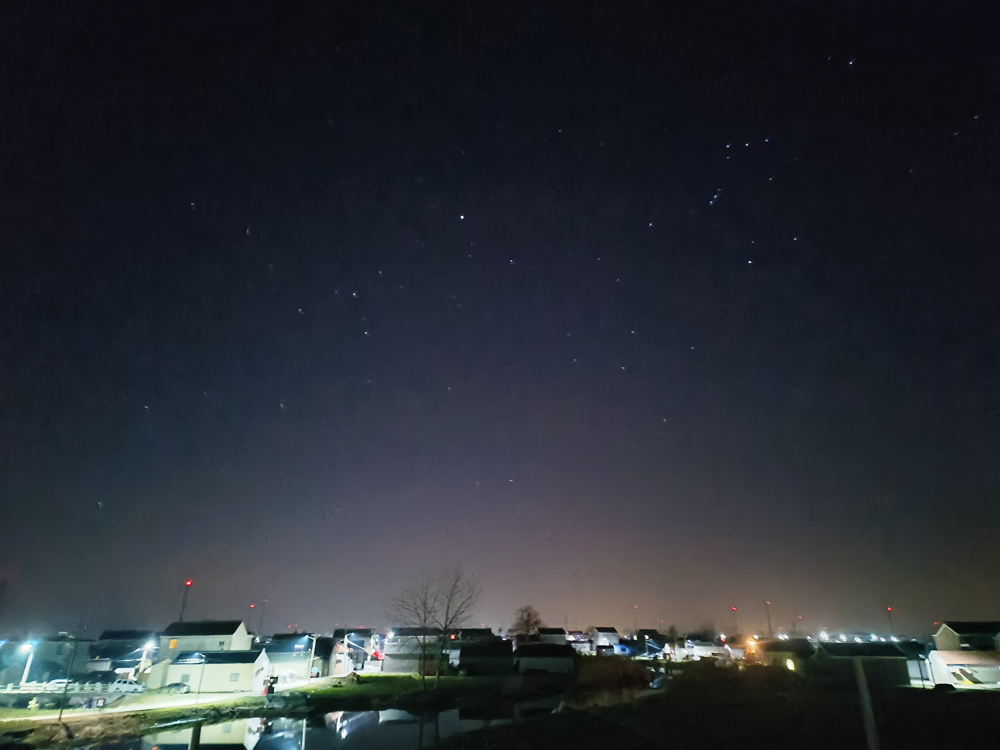
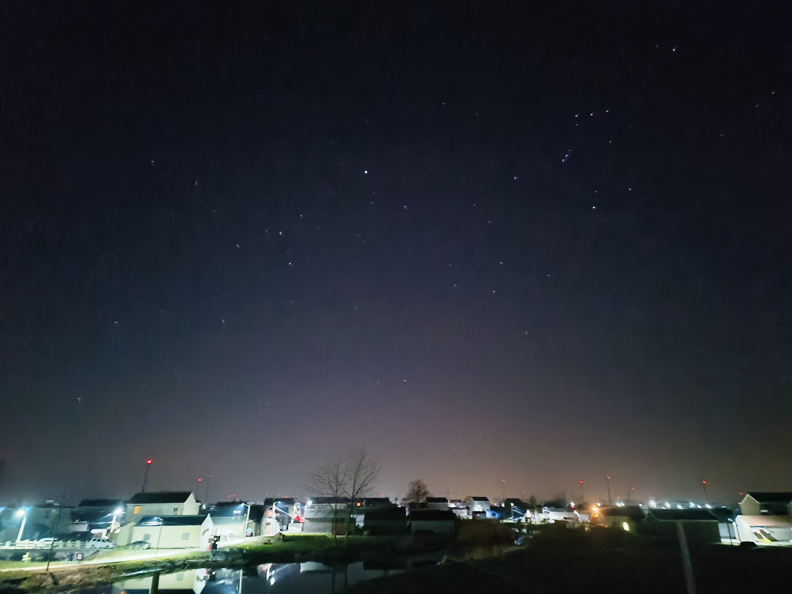

在杭州上课，taca培训，但这个老师其实有点不太会讲课，太紧张了，而且居然不是电子白板而是投影白纸手写。
好像马上又要停课了。我还挺想停的，但停完要是没走掉课内又很麻烦。不得不说学数学还是自己慢慢学比较舒服，虽然效率不见得高，但是连着一周高强度听课真太累了。
▷ 2024.04.08 19:43
在杭州上课，taca培训，但这个老师其实有点不太会讲课，太紧张了，而且居然不是电子白板而是投影白纸手写。
好像马上又要停课了。我还挺想停的，但停完要是没走掉课内又很麻烦。不得不说学数学还是自己慢慢学比较舒服，虽然效率不见得高，但是连着一周高强度听课真太累了。
▷ 2024.3.27 21:00
去了慕田峪长城！爬长城很累，特别是19到20敌台特别陡峭。可惜的是雾大，没看见多少风景。倒是在涂鸦墙上看到了可爱的猫娘！

▷ 2024.02.20 12:06
马上就要去学校了…作业大体上是写完了，能抄的卷子什么都抄完了，摘抄什么的也都打了擦边球（指写了但是量不多）。居然没有熬夜补作业呢…
不过昨天还是熬了一会夜，追了一部番princess principal。安潔超帅。
▷ 2024.02.19 11:00
昨天回苏州，到家之后我照常锁门，然后放音乐补作业。晚上九点的时候父亲来收平板，结果发现门打不开了，门的保险卡住了。经过半个多小时的修理，（指，拆掉能拆的地方然后拿螺丝刀和身份证往门缝里捅，）保险终于被捅断了。
顺带一提由于昨天半天的努力，今天作业压力轻了不少，甚至我现在还能发github。也就剩下物理十张英语八张数学两张化学十张以及英语练字若干，不算太多对吧。
▷ 2024.02.18 19:35
又到了喜闻乐见的东方永夜抄时间（不是）。
好吧，虽然后天才开学，但已经有一点紧迫感，开始补作业了。从这一点上看的话，或许我比去年有一点成长了，一点点。
现在的状况是数学带写带抄写了6张（剩4张），语文摘抄写一下午写差不多了，要交虽然感觉少了点但厚着脸皮也可以交的程度。其他，一概没写。
不只是明天，看来今天晚上也不能放松呢。
▷ 2024.02.18 10:23
神书。 少女所不期望的英雄史诗
话说我是不是该补补寒假作业了？
▷ 2024.02.13 23:41
乡下夜晚的天空其实还是有不少星星的，对我这种近视眼来说也确实是一闪一闪的。我试图用iPad拍下来结果拍出来一团黑，后来找母亲要了个（拍照功能强大以及自带后期的）手机，拍出来非常好看，比现实还好看。
 

▷ 2024.02.10 00:00
啊，新年了…新年快乐。
虽然是新年不过也就是普通的假期罢了，而且烟花会很吵以及烟味很难闻。春晚之类的自然也是没看，自己在房间里补番听歌刷b站。刚才看到一个叫neuro的AI Vtuber，（虽然以前其实也被推送过几次，但一直以为应该不会很灵活，然而）这位AI的对话很流畅，而且因为是AI所以不存在塌房之类的，而且很可爱。
很有自己搞一个的欲望。
▷ 2024.02.06 20:12
刚才打了一会phigros，想试图收一些15.7往上的歌，但是一个都没成功而且越打越烂，然后就特别烦躁，就删游了。删完之后想到以前写完全不会的题的时候，打东方stg一些困难的符卡的时候，玩act时最终boss一点都打不过的时候，大多是看攻略或者直接放弃。于是发现我并不能接受一件正在做的事情处于毫无进展的状态，换句话说我不能接受没有一点正反馈的行动。可能，我太急了。
至今为止所有事情都是随随便便的，基本上能呆在舒适区就绝不乱动，真遇到困难的时候也就只想着赶紧爬回舒适区而不是努力克服了。这大概不太好吧。
▷ 2024.02.03 09:27
昨天在网络上看到的一篇挺有意思的小漫画...

▷ 2024.02.02 10:31
2024的第一帖。
之前学校公众号发的数竞成绩，里面一位同学的感想提到两个小说角色，林朝夕和裴之。之前我不知道是何方人物，但是最近居然恰好看到了，是《天才基本法》里的两位主角。但是不得不感叹那位同学读书之仔细，我自己看肯定记不住这样详细的一句话的。
寒假不弄竞赛，所以没有竞赛课，而唯一的生物补课只有一天两小时，而且会的内容我基本不听，所以相当于寒假自由，大概是高中以来第一个名义上自由的寒假，也大概率是最后一个
因为网课所以久违的摸到电脑，于是报复性的玩了几天游戏，大概是，celeste、alice in cradle、blood root这些，前者只是重打了一遍1A到7A，后两个通关了，现在有点不知道要干什么，准备去玩elona，但是这玩意以前玩太久了，我不确定会不会玩一会就不想玩了...